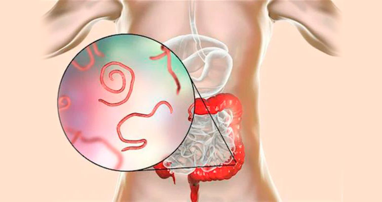
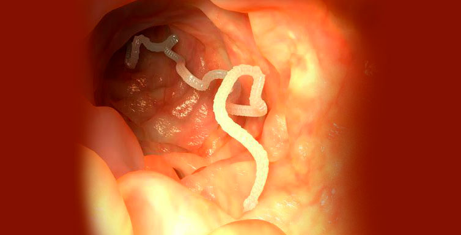

Εκατομμύρια άνθρωποι δεν υποψιάζονται ότι έχουν μολυνθεί με παράσιτα. Δεν είναι πάντα εύκολο να διαγνωστούν οι καταστροφείς στον οργανισμό, καθώς πολλά συμπτώματα συγχέονται εύκολα με σημάδια άλλων ασθενειών. Η απαλλαγή από επιβλαβείς οργανισμούς είναι πιο δύσκολη από ό, τι φαίνεται. Οι οργανισμοί αυτοί είναι αρκετά ανθεκτικοί και αναπαράγονται ενεργά. Για παράδειγμα, οι προνύμφες που μένουν μετά την μετάδοση μιας νόσου από οξύουρους μπορούν να παραμείνουν στον ανθρώπινο οργανισμό ακόμη και μετά τον καθαρισμό του από μεγάλους οξύουρους. Και τα συμπτώματα (αν εμφανιστούν) αποδίδονται συχνότερα σε άλλες ασθένειες. Η παρασιτολόγος-ανοσολόγος, Κατερίνα Καναββάκη, μας εξήγησε το πώς μπορεί να εντοπίσει κανείς γρήγορα και να θεραπευτεί από τα παράσιτα που έχουν προσβάλλει τον οργανισμό του.

- Γεια σας, γιατρέ. Είναι πράγματι τόσο έγκαιρο το πρόβλημα που δημιουργεί η προσβολή από παράσιτα;
- Γεια σας. Εάν κοιτάξουμε την στατιστική, τότε σύμφωνα με τα στοιχεία για το έτος 2010, δεν υπήρχαν περισσότερα από 3 δισεκατομμύρια μολυσμένα άτομα στον κόσμο. Μέσα σε δέκα χρόνια, ο αριθμός έχει φτάσει τα 5 δις.
- Τρομερό. Τόσοι πολλοί άνθρωποι! Είναι πραγματικά τόσο δύσκολο να απαλλαγεί κανείς απ’ τα παράσιτα;
- Ναι, πολλοί άνθρωποι δεν γνωρίζουν ότι έχουν μολυνθεί. Και από ό,τι φαίνεται είναι πιο δύσκολο να θεραπευτεί κανείς. Μερικοί άνθρωποι πιστεύουν ότι θα πάρουν ένα χάπι και όλα τα παράσιτα θα εξαλειφτούν. Αλλά δεν λαμβάνουν υπόψη το γεγονός ότι είναι αδύνατο να εξαλειφτούν όλα τα παράσιτα και τα αυγά τους.
- Πώς είναι δυνατόν να μην νιώσεις πως έχεις σκουλήκια μέσα σου;
- Δεν είναι πάντα σκουλήκια. Υπάρχουν επίσης τέτοιοι μικροοργανισμοί που δεν ανιχνεύονται ακόμη και κατά τη διάρκεια εκτεταμένων εξετάσεων.
- Δηλαδή, ένας άνθρωπος μπορεί να εξεταστεί για τυχόν παράσιτα και να πιστεύει πως είναι υγιές, αλλά στην πραγματικότητα έχει μολυνθεί;
- Δυστυχώς, αυτό συμβαίνει. Στη φύση, εμφανίζονται νέα είδη κάθε μέρα. Το παράσιτο προσαρμόζεται, μεταλλάσσετε το DNA του, το σχήμα, τη δομή του και παραμένει αόρατο για μεγάλο χρονικό διάστημα. Υπήρχαν περιπτώσεις που οι άνθρωποι έλεγαν ότι κάτι σέρνεται μέσα τους. Υποβάλλονταν σε πλήρη εξέταση, αλλά δεν τους έβρισκαν τίποτα. Μερικοί μεταφέρονταν σε ψυχιατρικό θάλαμο. Μετά από κάποιο καιρό, όταν ήταν πολύ αργά να θεραπευτούν από τα παράσιτα, αποδεικνυόταν ότι είχαν μολυνθεί με ένα προηγουμένως άγνωστο είδος.

- Τρομερό! Έχουν όλα τα παράσιτα αρνητική επίδραση στο σώμα;
- Χωρίς εξαίρεση, όλα τα παράσιτα τρέφονται με βιταμίνες και μικροστοιχεία του οργανισμού, στον οποίο ζουν, ενώ καταστρέφουν τους ιστούς του. Για παράδειγμα, η ασκαρίδα στο έντερο θα πιέζει, τραυματίζοντας το εντερικό τοίχωμα. Echinococcus, που βρίσκεται κάπου στο ήπαρ, στους πνεύμονες ή στα νεφρά, προκαλεί το σχηματισμό κύστης, ακόμα και κακοήθων όγκων.
- Πώς μπορεί να μολυνθεί κανείς με αυτά;
- Με πολλούς διαφορετικούς τρόπους. Η φιλαρίαση εμφανίζεται μετά από ένα δάγκωμα εντόμου. Τα αυγά των σκωλήκων, των ασκαρίδων, εισέρχονται στο σώμα μέσω φαγητού, νερού ή μετά από συναναστροφή με κατοικίδια.
- Έχω ακούσει ότι οι παρασιτικές μολύνσεις προκαλούν συχνά αλλεργίες που δεν μπορούν να θεραπευτούν.
- Σε περίπτωση αλλεργικών αντιδράσεων ο ασθενής αρχίζει να κάνει την διαδρομή δερματολόγος-θεραπευτής-αλλεργιολόγος. Αλλά μπορεί να μην μάθει ποτέ πως η αιτία της αλλεργίας είναι η ζωική δραστηριότητα των παρασίτων.
- Είναι αλήθεια ότι οι επιβλαβείς οργανισμοί βλάπτουν το ανοσοποιητικό σύστημα;
- Φυσικά, καθώς και την μικροχλωρίδα και το νευρικό σύστημα. Ως εκ τούτου, οι άνθρωποι υποφέρουν από συχνά κρυολογήματα και αναπτύσσουν χρόνιες ασθένειες. Τα παράσιτα παράγουν αντιένζυμα, καταστέλλοντας το ανοσοποιητικό σύστημα. Αργά ή γρήγορα αυτό οδηγεί σε σοβαρές ασθένειες.
- Τι είδους ασθένειες;
- Όλα εξαρτώνται από το όργανο και τον βαθμό της προσβολής. Το πιο επικίνδυνο που μπορούν να προκαλέσουν τα παράσιτα λόγω βλάβης οργάνων ή δυσλειτουργίας του ανοσοποιητικού συστήματος είναι η εμφάνιση όγκων, τόσο καλοήθη όσο και κακοήθη.
- Όσο περισσότερο μαθαίνω για τα παράσιτα, τόσο πιο πολύ φοβάμαι. Είναι αλήθεια ότι τα παράσιτα μπορούν να προκαλέσουν κατάθλιψη;
- Τα παράσιτα μπορούν ακόμη και να εξουσιάζουν τον άνθρωπο. Τα απόβλητά τους δηλητηριάζουν το νευρικό σύστημα. Οποιαδήποτε ψυχοσωματική ασθένεια μπορεί να συσχετιστεί με μετάδοση νόσου από παράσιτους οργανισμούς. Ακόμη και τα απλής μορφής lambia παράγουν τοξίνες. Οι μικροδόσεις τοξινών επηρεάζουν τον οργανισμό σαν τις ψυχοτρόπες ουσίες, προκαλώντας διαταραχές ύπνου, ψύχωση, ιδεοληψία, κατάθλιψη και άλλα ψυχολογικά προβλήματα.
- Τι φάρμακο πρέπει να πάρω εάν μάθω ότι έχω μολυνθεί;
Το μεγαλύτερο πρόβλημα πολλών φαρμάκων είναι ότι μόνο παραλύουν επιβλαβείς οργανισμούς, αλλά δεν τους απομακρύνουν. Ή τα απομακρύνουν εν μέρει. Για να αποθεραπευτείτε πλήρως, χρειάζεστε έναν πλήρη καθαρισμό του οργανισμού.
Υπάρχει άραγε τρόπος πλήρους καθαρισμού του οργανισμού από τα παράσιτα;
— Εμφανίστηκε σχετικά πρόσφατα. Ένα φυσικό αντιπαρασιτικό φάρμακο θα βοηθήσει στον καθαρισμό και την αποκατάσταση του σώματος. Ονομάζεται . Την δεδομένη χρονική στιγμή πρόκειται για την μόνη θεραπεία που όχι μόνο μάχεται με όλα τα γνωστά είδηи και καθαρίζει τον οργανισμό από απορρίμματα, αλλά και δημιουργεί προστατευτικό φράγμα , που εμποδίζει ακόμη και άγνωστα είδη παρασίτων να εισέλθουν στο σώμα.

— Πως είναι δυνατό αυτό; Πείτε μας περισσότερα!
— Μπαίνοντας στον ανθρώπινο οργανισμό, το μπλοκάρει το νευρικό σύστημα των παρασίτων, γι 'αυτό δεν μπορούν να κινηθούν, να αναπαραχθούν και να τρέφονται. Μετά από αυτό, οι παράλυτοι οργανισμοί αποσπώνται από τα τοιχώματα των εσωτερικών οργάνων και εκκρίνονται φυσικά. Το φάρμακο εξαλείφει όχι μόνο τα ίδια τα παράσιτα, αλλά και τις προνύμφες και τα απορρίμματα. Το τελικό στάδιο είναι η αποκατάσταση των κατεστραμμένων ιστών και η ανοσοδιαμόρφωση. Επομένως, είναι τόσο σημαντικό να ολοκληρώσετε όλο τον κύκλο θεραπείας με το φάρμακο.
— Υπάρχουν αντενδείξεις; Μπορούμε να χρησιμοποιούμε αυτό το φάρμακο για προληπτικούς λόγους;
— Καθημερινά κινδυνεύουμε από λοίμωξη. Το 95% του πληθυσμού έχει ήδη μολυνθεί και οι μισοί από αυτούς δεν το γνωρίζουν καν. Επομένως, είναι πολύ σημαντικό να προστατεύσετε τον εαυτό σας και τα αγαπημένα σας πρόσωπα. Και σε αντίθεση με τα φαρμακεία, το μπορεί κάποιος να το λαμβάνει και προληπτικά.
— Που μπορεί κάποιος να αποκτήσει το μέσο αυτό
— Το μπορεί να παραγγελθεί απευθείας από τον κατασκευαστή για παράδοση στο σπίτι. Το φάρμακο μπορεί να πληρωθεί τόσο με προπληρωμή όσο και κατά την παραλαβή στο ταχυδρομείο - πολύ βολικό.
— Ευχαριστώ πολύ για την τόσο λεπτομερή συνέντευξη.
— Σας ευχαριστούμε που επιλέξατε να επισημάνετε ένα τόσο σημαντικό πρόβλημα της εποχής μας. Σας εύχομαι τα καλύτερα και να είστε υγιείς.